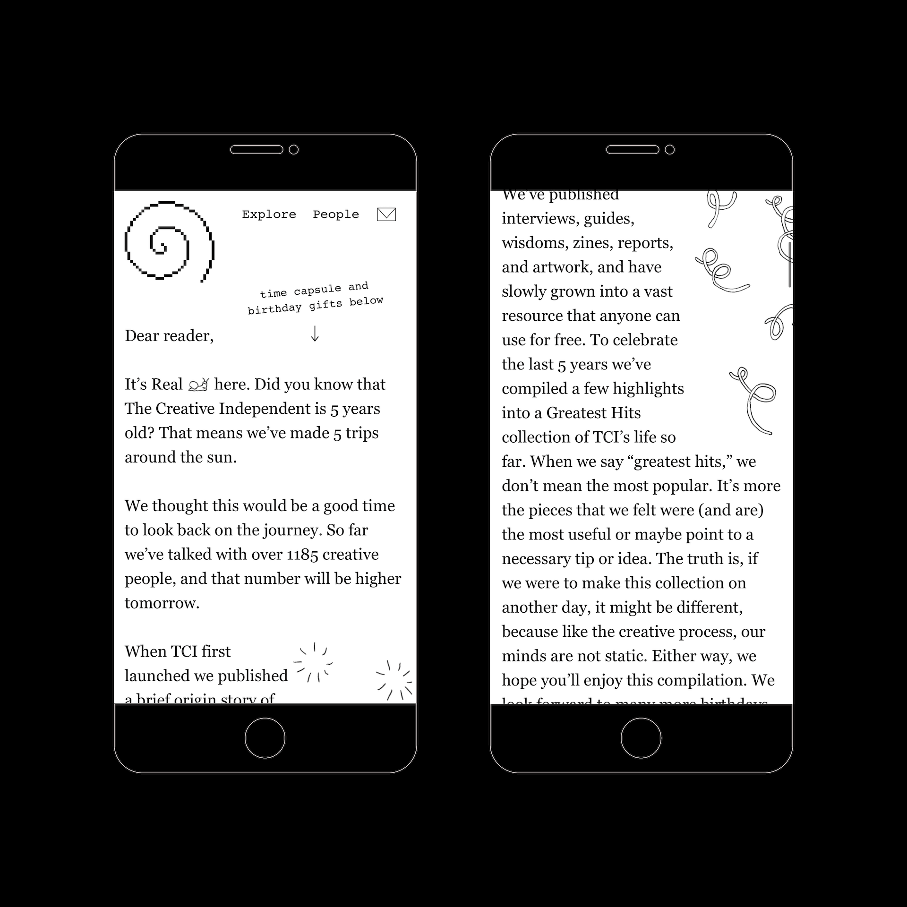
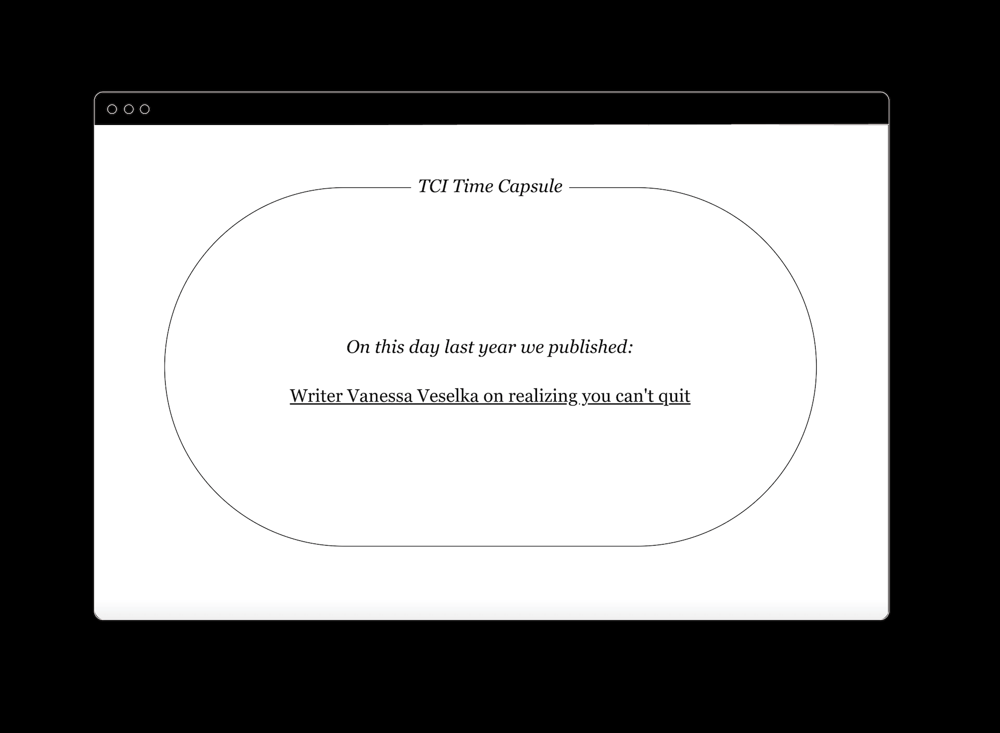
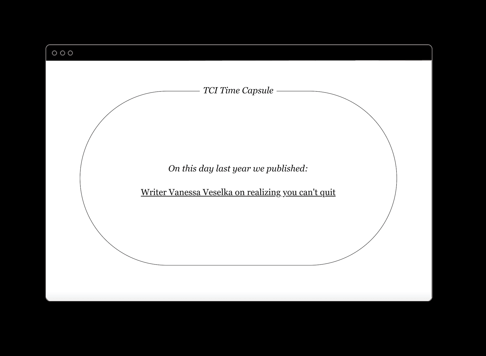
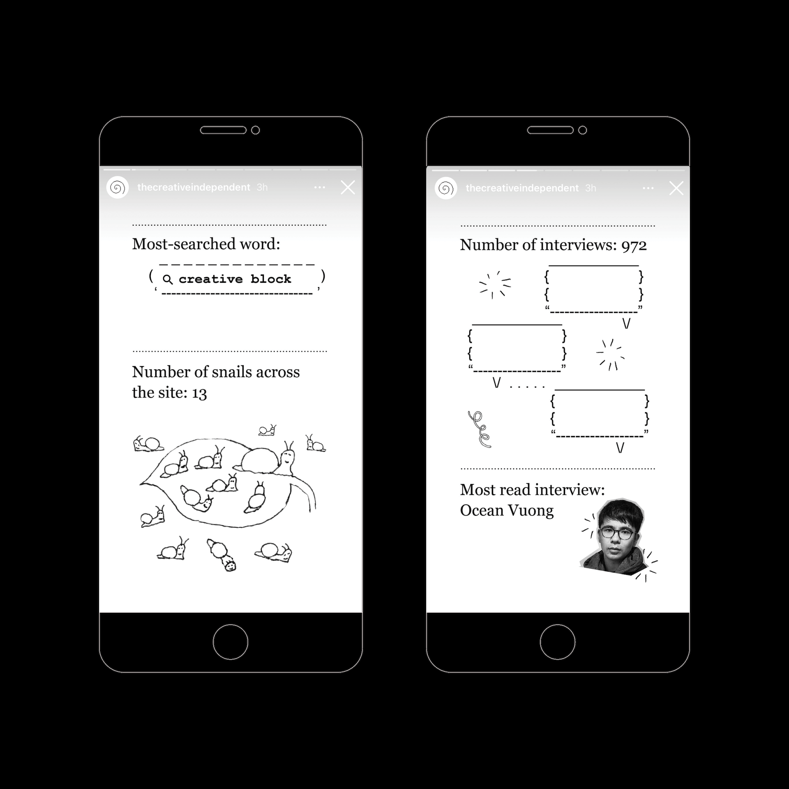

TCI Turns 52021
To celebrate The Creative Independent's 5th birthday, we built a loving tribute to its readers, contributors, and friends. The temporary microsite houses clips from the TCI archives; voice messages from fans across the globe; and playlists by longtime collaborators.
Credits:
Produced and edited by Brandon Stosuy
Illustrations by Oriane Brunat
Site design by Elliott Cost and Mikki Janower
Social media design by Amy Williams and Sam Oriach
Art direction by Mikki Janower
Developed by Elliott Cost


 

